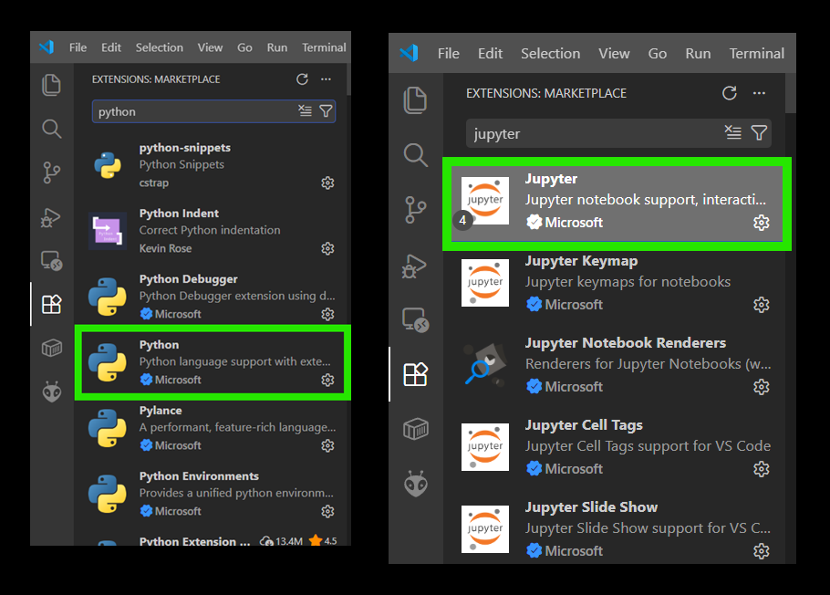
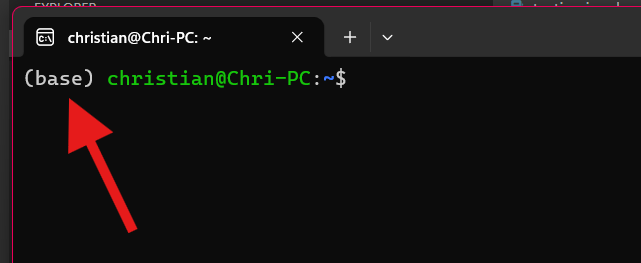
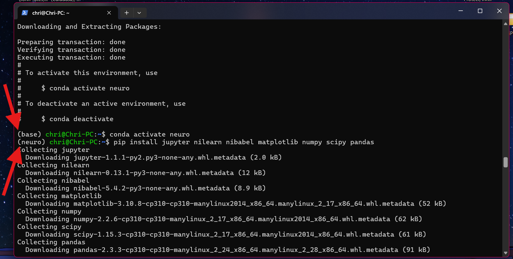

Per l'esercitazione useremo Visual Studio Code per leggere il codice e Miniconda per farlo funzionare.

Apri il Terminale di macOS. Incolla questo comando e premi invio:
cd ~ && curl -O https://repo.anaconda.com/miniconda/Miniconda3-latest-MacOSX-arm64.sh && bash ./Miniconda3-latest-MacOSX-arm64.shPremi Invio per scorrere la licenza, una volta in fondo scrivi yes per accettarla e premi Invio.
Premi invio per installare Miniconda nella directory di default. Quando ti chiede se vuoi inizializzare Miniconda, scrivi yes e premi invio.
(base) all'inizio della riga. Significa che Python è attivo!

Nel terminale Ubuntu appena riaperto esegui questi comandi per accettare i termini di servizio e scaricare i pacchetti python:
conda tos accept --override-channels --channel https://repo.anaconda.com/pkgs/main
conda tos accept --override-channels --channel https://repo.anaconda.com/pkgs/rPoi, crea l'ambiente per la nostra esercitazione eseguendo questi comandi, uno alla volta:
conda create -n neuro python=3.10 -yconda activate neuro(base) all'inizio della riga dovrebbe essere cambiata in (neuro))pip install jupyter nilearn nibabel matplotlib numpy scipy pandas